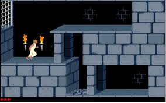

Prince of Persia is a 1989 fantasy cinematic platformer originally
developed and published by Brøderbund and designed by Jordan Mechner
for the Apple II. In the game, players control an unnamed protagonist
who must venture through a series of dungeons to defeat the Grand Vizier
Jaffar and save an imprisoned princess.
Much like Karateka, Mechner's first game, Prince of Persia used rotoscoping
for its fluid and realistic animation. For this process, Mechner used as reference
for the characters' movements videos of his brother doing acrobatic stunts in white
clothes and swashbuckler films such as The Adventures of Robin Hood.
The game was critically acclaimed and, while not an immediate commercial success,
sold many copies as it was ported to a wide range of platforms after the original
Apple II release. It is believed to have been the first cinematic platformer and
inspired many following games in this subgenre, such as Another World.[4] Its success
led to the release of two sequels, Prince of Persia 2: The Shadow and the Flame
and Prince of 3D, and two reboots of the series, first in 2003 with Prince
of Persia: The Sands of Time, which led to three sequels of its own, and then again
in 2008 with the identically-titled Prince of Persia.